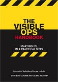

11 cosas sobre DevOps (4): Cómo encaja con Visible Ops
Aunque con retraso, aquí está el cuarto punto que es necesario conocer, según Gene Kim, sobre DevOps. En esta ocasión, compara DevOps con lo que describió en el libro que coescribió, titulado Visible Ops Handbook. Como en las anteriores ocasiones, para comentar podéis utilizar el hashtag #11cosasdevops.
4. ¿Cómo encajan DevOps y Visible Ops?
Coescribí [*] Visible Ops Handbook en 2004 con Kevin Behr y George Spafford, con los que también coescribí The Phoenix Project. Visible Ops es una guía prescriptiva para transmitir las mejoras para los equipos de operaciones, y uno de los conceptos clave es la noción de cómo controlar y reducir el trabajo no planificado.
En muchos aspectos, veo DevOps como justo lo contrario, es decir, enfocado principalmente en cómo crear un flujo rápido y estable de trabajo planificado a través de los equipos de desarrollo y de operaciones. No obstante, DevOps también tiene un acercamiento más holístico a la erradicación sistemática del trabajo no planificado, aplicando principios de la ingeniería elástica y la gestión responsable junto con la reducción de la deuda técnica.
| [*] | La primera persona hace referencia al autor del original. |